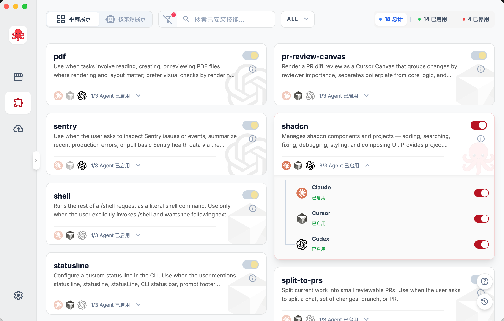
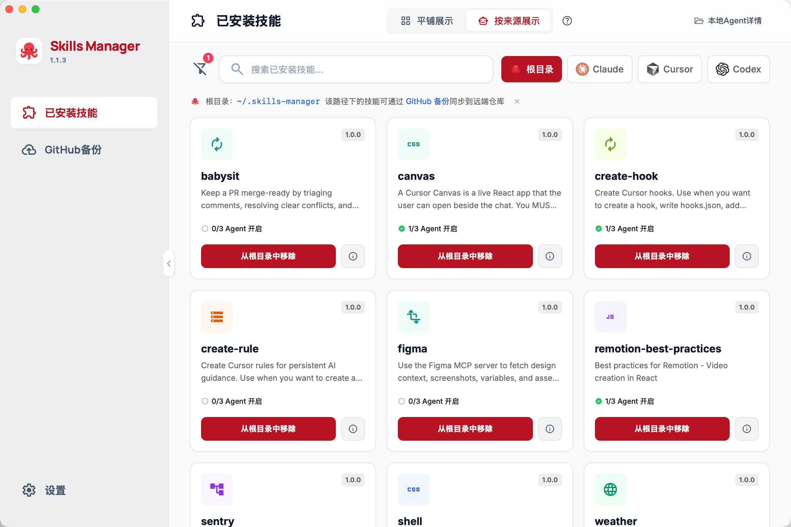
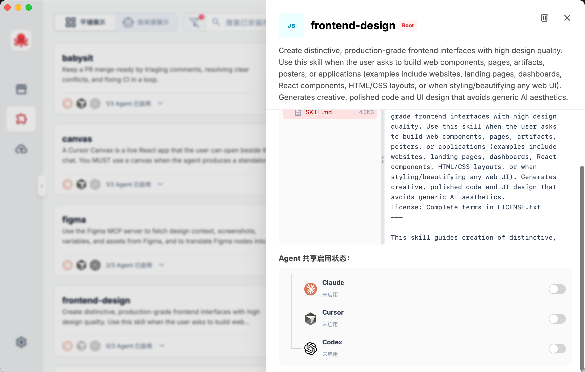
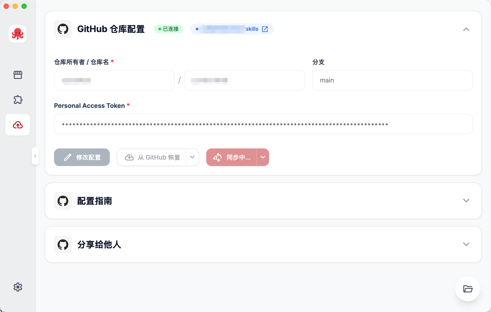
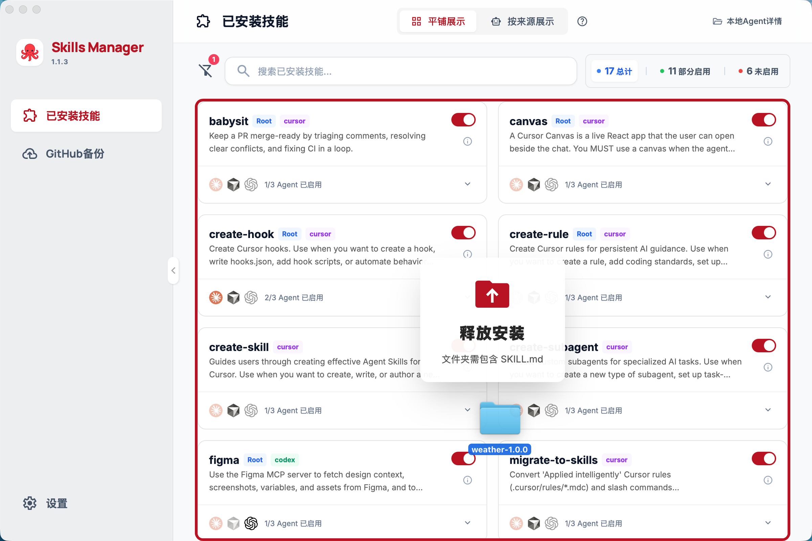
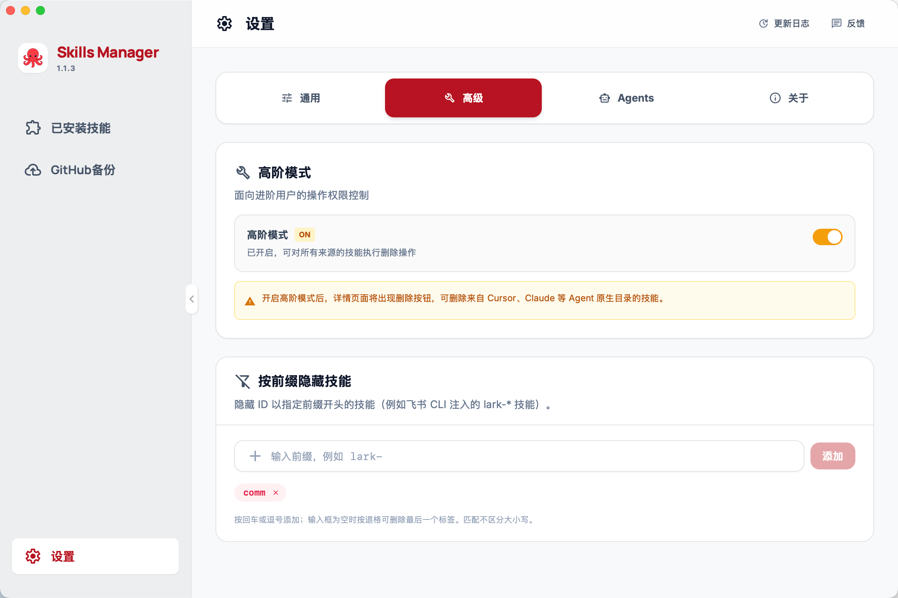

你的 多 Agent 技能总部
一款为 Claude Code、Cursor、Codex 等 AI Agent 打造的桌面应用。
一键共享、一键同步、跨 Agent 统一管理 Skills，用 GitHub 备份打造专属的技能仓库。
Core Features
不再为 Claude Code、Cursor、Codex 各自的技能目录反复切换。把 Skills 集中在一起看、一起管、一起分发。
主开关 / 子开关分别支持整体和细粒度控制，把任意 Skill 瞬间链接到 Cursor、Codex 或 Claude 等目标 Agent 上。
一键把本地 Skills 推到 GitHub，新机器克隆即恢复。备份仓库可直接作为 Claude Code Marketplace，让团队共享你的技能。
把任意含 SKILL.md 的文件夹拖入窗口即可入库，无需命令行、无需路径参数，秒级完成导入。
平铺视图看"有哪些 Skill"；按来源视图看"每个 Agent 里有啥"。不同任务切不同视角，不丢信息。
红 / 灰 / 黄一目了然地显示"全部启用 / 未启用 / 仅原生目录"三态，包含 native 来源的 Skill 也能清晰识别。
基于 Tauri 2 + Rust 构建，冷启动 < 1 秒，占用内存极低；前端 React 18 + Tailwind，流畅丝滑。
View · 平铺展示
不区分来源，按 Skill 维度聚合。再也不用在 .claude/skills、.cursor/agents、~/.codex 之间来回跳。

View · 按来源展示
按来源分组展示，同一 Skill 在不同 Agent 的拷贝状态一目了然，方便你决定哪些收录到根目录、哪些保留在本地。

Skill Detail
点击任意 Skill 即可查看完整文件结构、SKILL.md 内容，以及该 Skill 在各 Agent 的共享状态。可在面板里直接拖拽调整宽度，照顾不同屏幕。

GitHub · 备份 / 恢复 / Marketplace
接入个人 GitHub 仓库，一键同步 · 一键恢复。仓库既是你跨机器的"云端技能库"，又可直接作为 Claude Code Plugin Marketplace 给团队或社区使用。

Drag & Drop · 零门槛
不会用命令行也没关系。直接把包含 SKILL.md 的文件夹从文件管理器拖进窗口，立刻入库、立刻可共享到其它 Agent。

Settings · 可控可靠
默认以"只读观察者"身份加入你的 Agent 生态，需要时再开启高阶模式执行写入或删除，避免误伤原有技能。

FAQ
完全免费、开源，基于 MIT License 发布，仓库在 GitHub 上公开。你可以自由使用、修改、分发，也欢迎提 Issue 或 PR。
默认不会。应用以观察者模式扫描各 Agent 目录，并在你授权（启用开关 / 拖拽导入 / 拷贝到根目录）时才创建符号链接或拷贝文件。误删保护默认开启，高阶写操作需要在"设置 → 高阶模式"里显式打开。
当前已支持 Claude Code、Cursor、Codex、OpenClaw 等主流 AI Agent。只要 Agent 的 Skill 目录符合 SKILL.md 约定，理论上都能被扫描和管理。新增 Agent 的支持欢迎发起 PR。
不需要。使用你自己的个人 GitHub 账号即可（Public / Private 仓库都支持）。如果希望作为 Claude Code Marketplace 分享给他人，建议使用 Public 仓库。
目前提供 macOS (Apple Silicon + Intel) 与 Windows 10+ 的安装包。Linux 用户可 clone 仓库后执行 npm run tauri:build 自行构建。
核心差异是"跨 Agent 视角 + 桌面级交互"。大多数 CLI 只处理单个 Agent；Skills Manager 把所有 Agent 的 Skill 聚合到同一个界面，三态开关 + 主开关 + 拖拽让多 Agent 场景的日常管理不再切目录、不再手敲命令。